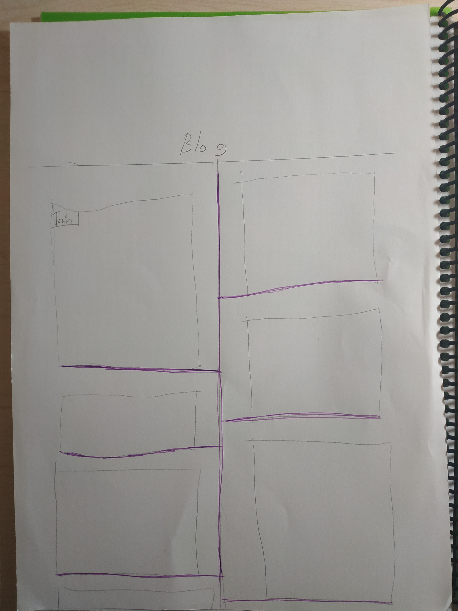
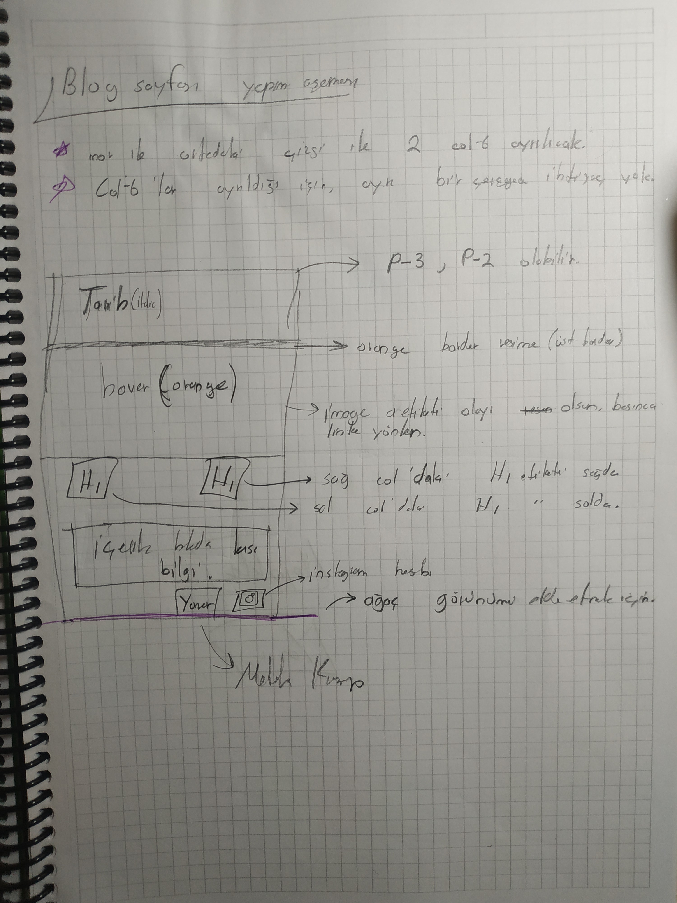

Uzun bir aradan sonra bugün kendi websitemin blog kısmını geliştirmeye karar verdim. İlk postu da bu blog kısmını nasıl yaptığımı anlatmak için yazıyorum. ↓
-
1 İlk olarak internetteki çeşitli kaynaklardan (themeforest.net,colorlib.com) blog tasarımlarına göz gezdirdim.
- Bunu yapmamın nedeni diğer tasarımlardan biraz fikir edinmek ve bunları harmanlayıp , websitemi ziyaret eden kullanıcılar için güzel bir arayüz tasarlamaktı.
-
2 Sonrasında baktığım blog tasarımlarından kafamda kalanlarla aklıma en uygun tasarımı yapmak için elime bir kağıt kalem aldım ve çizmeye başladım.
- İlk olarak websitemdeki "blog" kısmına tıklayan kullanıcılar için karşılarına ilk gelecek olan postların hepsinin olduğu kısımı hazırladım. resimde görünen mor renkli çizgi aslında bir dalı temsil ediyor. fakat yeşil rengim olmadığı için böyle bir şey hazırladım :)
- Çizim biraz basit gözüküyor olabilir ama bu sadece taslaktı veo içi boş olan kareler benim postlarımı temsil ediyordu.
-
3
Tabii ki o içi boş olan kısımları doldurma vakti artık...
- İlk önce blog kısmının rengini seçtim,taslakta turuncuydu fakat çok göz aldığı için turuncudan vazgeçip su yeşiline yakın bir renk seçtim
- Tarihi sol üste koymayıtercih ettim ,baktığım blog sayflarında da buna benzer bir tasarım hoşuma gitmişti.
- Her postun bir tane de o konuyla lakalı görseli olması gerektiğini düşündüm ve görsel eklemesini yaptım.(Tabii sadece çizimde...)
- En önemli özellik içerik.Başlığı biraz öne çıkarıp içeriğin bir kısmını yazmayı tercih ettim çünkü kullanıcıların gönderilere tıklayıp, post'u daha ayrıntılı şekilde incelemesi ve websitemde daha fazla trafik oluşmasını sağlamanın iyi olacağını biliyordum.
 -
4
Son olarak da bunların hepsini Kodlama yaparak Bu hale getirdim...Okuduğunuz için teşekkürler ♥...